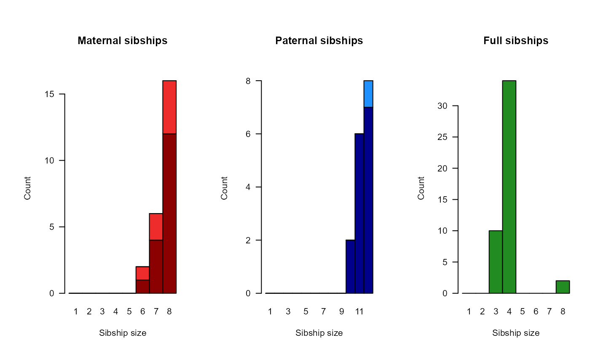

Pedigree Reconstruction
sequoia.RdPerform pedigree reconstruction based on SNP data, including parentage assignment and sibship clustering.
sequoia( GenoM = NULL, LifeHistData = NULL, SeqList = NULL, Module = "ped", MaxSibIter = 42, Err = 1e-04, ErrFlavour = "version2.0", MaxMismatch = NA, Tfilter = -2, Tassign = 0.5, MaxSibshipSize = 100, DummyPrefix = c("F", "M"), Complex = "full", Herm = "no", UseAge = "yes", args.AP = list(Flatten = NULL, Smooth = TRUE), FindMaybeRel = FALSE, CalcLLR = TRUE, quiet = FALSE, Plot = NULL )
Arguments
| GenoM | numeric matrix with genotype data: One row per individual, and
one column per SNP, coded as 0, 1, 2 or -9 (missing). See also
|
|---|---|
| LifeHistData | dataframe with 3 columns (optionally 5):
If the species has multiple generations per year, use an integer coding such that the candidate parents' `Birth year' is at least one smaller than their putative offspring's. Column names are ignored, so ensure column order is ID - sex - birth year (- BY.min - BY.max). Individuals do not need to be in the same order as in `GenoM', nor do all genotyped individuals need to be included. |
| SeqList | list with output from a previous run, to be re-used in the
current run. Used are elements `PedigreePar', `LifeHist', `AgePriors',
`Specs', and `ErrM', and these override the corresponding input parameters.
Not all of these elements need to be present, and all other elements are
ignored. If |
| Module | one of
NOTE: Until `MaxSibIter` is fully deprecated: if `MaxSibIter` differs
from the default ( |
| MaxSibIter | [will be deprecated] number of iterations of sibship clustering, including assignment of grandparents to sibships and avuncular relationships between sibships. Clustering continues until convergence or until MaxSibIter is reached. Set to 0 for parentage assignment only. |
| Err | estimated genotyping error rate, as a single number or 3x3 matrix. Details below. The error rate is presumed constant across SNPs, and missingness is presumed random with respect to actual genotype. |
| ErrFlavour | function that takes |
| MaxMismatch | DEPRECATED AND IGNORED. Now calculated
automatically using |
| Tfilter | threshold log10-likelihood ratio (LLR) between a proposed relationship versus unrelated, to select candidate relatives. Typically a negative value, related to the fact that unconditional likelihoods are calculated during the filtering steps. More negative values may decrease non-assignment, but will increase computational time. |
| Tassign | minimum LLR required for acceptance of proposed relationship, relative to next most likely relationship. Higher values result in more conservative assignments. Must be zero or positive. |
| MaxSibshipSize | maximum number of offspring for a single individual (a generous safety margin is advised). |
| DummyPrefix | character vector of length 2 with prefixes for dummy dams (mothers) and sires (fathers); maximum 20 characters each. Length 3 vector in case of hermaphrodites (or default prefix 'H'). |
| Complex | Breeding system complexity. Either "full" (default), "simp" (simplified, no explicit consideration of inbred relationships), "mono" (monogamous). |
| Herm | Hermaphrodites, either "no", "A" (distinguish between dam and sire role, default if at least 1 individual with sex=4), or "B" (no distinction between dam and sire role). Both of the latter deal with selfing. |
| UseAge | either "yes" (default), "no", or "extra" (additional rounds with extra reliance on ageprior, may boost assignments but increased risk of erroneous assignments); used during full reconstruction only. |
| args.AP | list with arguments to be passed on to
|
| FindMaybeRel | DEPRECATED AND IGNORED, advised to run
|
| CalcLLR | TRUE/FALSE; calculate log-likelihood ratios for all assigned
parents (genotyped + dummy; parent vs. otherwise related). Time-consuming
in large datasets. Can be done separately with |
| quiet | suppress messages: TRUE/FALSE/"verbose". |
| Plot | display plots from |
Value
A list with some or all of the following components:
Matrix with age-difference based probability ratios for
each relationship, used for full pedigree reconstruction; see
MakeAgePrior for details. When running only parentage
assignment (Module="par") the returned AgePriors has been updated to
incorporate the information of the assigned parents, and is ready for use
during full pedigree reconstruction.
Dataframe with pedigree for dummy individuals, as well as
their sex, estimated birth year (point estimate, upper and lower bound of
95% confidence interval; see also CalcBYprobs), number of
offspring, and offspring IDs. From version 2.1 onwards, this includes dummy
offspring.
Dataframe, duplicated genotypes (with different IDs, duplicate IDs are not allowed). The specified number of maximum mismatches is used here too. Note that this dataframe may include pairs of closely related individuals, and monozygotic twins.
Dataframe, row numbers of duplicated IDs in life history dataframe. For convenience only, but may signal a problem. The first entry is used.
Error matrix; probability of observed genotype (columns) conditional on actual genotype (rows)
Individuals in GenoM which were excluded because of a too low genotyping success rate (<50%).
Column numbers of SNPs in GenoM which were excluded because of a too low genotyping success rate (<10%).
Provided dataframe with sex and birth year data.
LifeHist with additional columns 'Sexx' (inferred Sex when assigned as part of parent-pair), 'BY.est' (mode of birth year probability distribution), 'BY.lo' (lower limit of 95% highest density region), 'BY.hi' (higher limit), inferred after parentage assignment. 'BY.est' is NA when the probability distribution is flat between 'BY.lo' and 'BY.hi'.
as LifeHistPar, but estimated after full pedigree reconstruction
Dataframe with pairs of individuals who are more likely parent-offspring than unrelated, but which could not be phased due to unknown age difference or sex, or for whom LLR did not pass Tassign.
Dataframe with pairs of individuals who are more likely to be first or second degree relatives than unrelated, but which could not be assigned.
Dataframe with non-assigned parent-parent-offspring trios (both parents are of unknown sex), with similar columns as the pedigree
Vector, IDs in genotype data for which no life history data is provided.
Dataframe with assigned genotyped and dummy parents from Sibship step; entries for dummy individuals are added at the bottom.
Dataframe with assigned parents from Parentage step.
Named vector with parameter values.
Numeric vector, Total likelihood of the genotype data at initiation and after each iteration during Parentage.
Numeric vector, Total likelihood of the genotype data at initiation and after each iteration during Sibship clustering.
As AgePriors, but including columns for grandparents and avuncular pairs. NOT updated after parentage assignment, but returned as used during the run.
Hermaphrodites only: female-male dummy ID pairs that refer to the same non-genotyped individual
Individual ID
Assigned mother, or NA
Assigned father, or NA
Log10-Likelihood Ratio (LLR) of this female being the mother,
versus the next most likely relationship between the focal individual and
this female. See Details below for relationships considered, and see
CalcPairLL for underlying likelihood values and further
details)
idem, for male parent
LLR for the parental pair, versus the next most likely configuration between the three individuals (with one or neither parent assigned)
Number of loci at which the offspring and mother are opposite homozygotes
idem, for father
Number of Mendelian errors between the offspring and the parent pair, includes OH as well as e.g. parents being opposing homozygotes, but the offspring not being a heterozygote. The offspring being OH with both parents is counted as 2 errors.
Details
For each pair of candidate relatives, the likelihoods are calculated of them being parent-offspring (PO), full siblings (FS), half siblings (HS), grandparent-grandoffspring (GG), full avuncular (niece/nephew - aunt/uncle; FA), half avuncular/great-grandparental/cousins (HA), or unrelated (U). Assignments are made if the likelihood ratio (LLR) between the focal relationship and the most likely alternative exceed the threshold Tassign.
Dummy parents of sibships are denoted by F0001, F0002, ... (mothers) and M0001, M0002, ... (fathers), are appended to the bottom of the pedigree, and may have been assigned real or dummy parents themselves (i.e. sibship-grandparents). A dummy parent is not assigned to singletons.
The genotyping error rate `Err` is by default at locus level, not allele level: the probability to observe true homozygote aa as heterozygote Aa is \(\approx E\), and as alternate homozygote AA \((E/2)^2\); the probability to observe a true heterozygote as aa = the probability to observe it as AA \(= E/2\). This error structure can be fully customised by providing a 3x3 matrix of observed genotype (columns) conditional on actual genotype (rows) instead.
Full explanation of the various options and interpretation of the output is provided in the vignette.
Disclaimer
While every effort has been made to ensure that sequoia provides what it claims to do, there is absolutely no guarantee that the results provided are correct. Use of sequoia is entirely at your own risk.
References
Huisman, J. (2017) Pedigree reconstruction from SNP data: Parentage assignment, sibship clustering, and beyond. Molecular Ecology Resources 17:1009--1024.
See also
GenoConvertto read in various data formats,CheckGeno,SnpStatsto calculate missingness and allele frequencies,SimGenoto simulate SNP data from a pedigreeMakeAgePriorto estimate effect of age on relationships,GetMaybeRelto find pairs of potential relatives,SummarySeqandPlotAgePriorto visualise results,GetRelMto turn a pedigree into pairwise relationships,CalcOHLLRto calculate Mendelian errors and LLR for any pedigree,CalcPairLLfor likelihoods of various relationships between specific pairs,CalcBYprobsto estimate birth years,PedCompareandComparePairsto compare to two pedigrees,EstConfto estimate assignment errors,writeSeqto save results,vignette("sequoia") for detailed manual & FAQ.
Author
Jisca Huisman, jisca.huisman@gmail.com
Examples
# === EXAMPLE 1: simulated data === data(SimGeno_example, LH_HSg5, package="sequoia") head(SimGeno_example[,1:10])#> V2 V3 V4 V5 V6 V7 V8 V9 V10 V11 #> a00013 0 0 0 1 0 0 0 1 0 2 #> a00008 1 1 1 1 2 1 1 1 1 0 #> a00011 0 2 1 2 2 1 0 2 0 0 #> a00023 0 0 1 1 1 0 0 0 2 0 #> a00006 1 1 1 0 0 0 0 0 1 1 #> a00004 0 1 1 1 2 1 1 0 0 1#> ID Sex BirthYear #> 1 a00001 1 2000 #> 2 a00002 1 2000 #> 3 a00003 1 2000 #> 4 a00004 1 2000 #> 5 a00005 1 2000 #> 6 a00006 1 2000# parentage assignment: SeqOUT <- sequoia(GenoM = SimGeno_example, Err = 0.005, LifeHistData = LH_HSg5, Module="par", Plot=TRUE)#>#>#> #>#> #>#> Parentage ... #> Initial total LL : #> [1] -18301.94 #> Post-parentage total LL : #> [1] -13484.17 #> Estimating birth years ... #> Calculating parental LLR ...#>#> [1] "Specs" "ErrM" "AgePriors" "LifeHist" #> [5] "DupLifeHistID" "NoLH" "PedigreePar" "TotLikPar" #> [9] "AgePriorExtra" "LifeHistPar"SeqOUT$PedigreePar[34:42, ]#> id dam sire LLRdam LLRsire LLRpair OHdam OHsire MEpair #> 34 a01002 <NA> <NA> NA NA NA NA NA NA #> 35 b01003 <NA> <NA> NA NA NA NA NA NA #> 36 b01004 <NA> <NA> NA NA NA NA NA NA #> 37 a01005 a00013 b00001 2.72 3.92 6.31 0 0 1 #> 38 b01006 a00013 b00001 2.65 3.11 5.79 0 0 1 #> 39 b01007 a00013 b00001 2.27 3.75 4.53 0 0 2 #> 40 a01008 a00013 b00001 -0.24 3.93 5.59 0 0 2 #> 41 b01009 a00008 b00016 0.13 4.10 6.54 0 0 2 #> 42 a01010 a00008 b00016 3.44 4.44 7.46 0 0 1PC$Counts["GG",,]#> parent #> class dam sire #> Total 130 170 #> Match 130 167 #> Mismatch 0 0 #> P1only 0 3 #> P2only 0 0# \donttest{ # parentage assignment + full pedigree reconstruction: SeqOUT2 <- sequoia(GenoM = SimGeno_example, Err = 0.005, LifeHistData = LH_HSg5, Module="ped", quiet="verbose")#>#>#> #>#> #>#> Counting opposing homozygous loci between all individuals ... #> Parentage ... #> Initial total LL : #> [1] -18301.94 #> Round 01: #> [1] -13484.17 #> Round 02: #> [1] -13484.17 #> Post-parentage total LL : #> [1] -13484.17 #> Estimating birth years ... #> Calculating parental LLR ...#>#>#> #>#> Counting opposing homozygous loci between all individuals ... #> Sibships - Initial Total LL : #> [1] -13484.17 #> Parents pre-check ... #> Total LL : #> [1] -13484.17 #> --- Round 01 start --- #> Find pairs ... #> [1] 200 #> n pairs: #> [1] 151 #> Clustering ... #> Total LL, time: #> [1] -1.23158e+04 2.34375e-01 #> Merge clusters ... #> Total LL, time: #> [1] -12315.79551 0.03125 #> Sibship parent replacement... #> Total LL, time: #> [1] -1.23158e+04 1.56250e-02 #> Parents & grow clusters... #> Total LL, time: #> [1] -1.23158e+04 2.03125e-01 #> Round 01 end, Total LogLik; time (sec): #> [1] -1.23158e+04 7.96875e-01 #> No. dams, sires for real indiv.: #> [1] 182 182 #> No. dummies: #> [1] 7 1 #> --------------- #> --- Round 02 start --- #> Find pairs ... #> [1] 200 #> n pairs: #> [1] 0 #> Clustering ... #> Total LL, time: #> [1] -1.23158e+04 1.56250e-02 #> Merge clusters ... #> Total LL, time: #> [1] -1.23158e+04 1.56250e-02 #> Sibship parent replacement... #> Total LL, time: #> [1] -12315.79551 0.03125 #> Sibship grandparents ... #> Total LL, time: #> [1] -12315.79551 0.03125 #> Parents & grow clusters... #> Total LL, time: #> [1] -1.23158e+04 1.56250e-02 #> Round 02 end, Total LogLik; time (sec): #> [1] -12315.79551 0.15625 #> No. dams, sires for real indiv.: #> [1] 182 182 #> No. dummies: #> [1] 7 1 #> --------------- #> --- Round 03 start --- #> Find pairs ... #> [1] 200 #> n pairs: #> [1] 0 #> Clustering ... #> Total LL, time: #> [1] -12315.79551 0.03125 #> Grandparent - grandoffspring pairs ... #> Total LL, time: #> [1] -1.23158e+04 1.56250e-02 #> Merge clusters ... #> Total LL, time: #> [1] -12315.79551 0.03125 #> Sibship parent replacement... #> Total LL, time: #> [1] -12315.8 0.0 #> Sibship grandparents ... #> Total LL, time: #> [1] -1.23158e+04 1.56250e-02 #> Parents & grow clusters... #> Total LL, time: #> [1] -1.23158e+04 4.68750e-02 #> Round 03 end, Total LogLik; time (sec): #> [1] -12315.7955 0.1875 #> No. dams, sires for real indiv.: #> [1] 182 182 #> No. dummies: #> [1] 7 1 #> --------------- #> Estimating birth years ... #> Calculating parental LLR ...#>SeqOUT2$Pedigree[34:42, ]#> id dam sire LLRdam LLRsire LLRpair OHdam OHsire MEpair #> 34 a01002 F0002 M0001 4.11 3.34 7.74 NA NA NA #> 35 b01003 F0002 M0001 5.28 1.96 5.26 NA NA NA #> 36 b01004 F0002 M0001 4.25 3.29 5.82 NA NA NA #> 37 a01005 a00013 b00001 5.78 7.83 11.00 0 0 1 #> 38 b01006 a00013 b00001 4.97 8.10 10.16 0 0 1 #> 39 b01007 a00013 b00001 4.75 6.53 8.73 0 0 2 #> 40 a01008 a00013 b00001 5.01 6.41 10.56 0 0 2 #> 41 b01009 a00008 b00016 5.94 5.18 8.36 0 0 2 #> 42 a01010 a00008 b00016 7.22 6.21 9.65 0 0 1PC2$Counts["GT",,]#> parent #> class dam sire #> Total 182 182 #> Match 182 182 #> Mismatch 0 0 #> P1only 0 0 #> P2only 0 0PC2$Counts[,,"dam"]#> class #> cat Total Match Mismatch P1only P2only #> GG 130 130 0 0 0 #> GD 52 52 0 0 0 #> GT 182 182 0 0 0 #> DG 0 0 0 0 0 #> DD 0 0 0 0 0 #> DT 0 0 0 0 0 #> TT 960 182 0 778 0# different kind of pedigree comparison: ComparePairs(Ped1=Ped_HSg5, Ped2=SeqOUT$PedigreePar, patmat=TRUE)#> Ped2 #> Ped1 M P O FS MHS PHS U X #> M 130 0 0 0 0 0 0 830 #> P 0 167 0 0 0 0 3 790 #> FS 0 0 0 206 12 59 13 1310 #> MHS 0 0 0 0 217 0 97 1446 #> PHS 0 0 0 0 0 587 71 3022 #> U 0 0 0 0 0 0 21229 469311 #> X 0 0 0 0 0 0 0 0# important to run with approx. correct genotyping error rate: SeqOUT2.b <- sequoia(GenoM = SimGeno_example, # Err = 1e-4 by default LifeHistData = LH_HSg5, Module="ped", Plot=FALSE)#>#>#> #>#> #>#> Parentage ... #> Initial total LL : #> [1] -18301.9 #> Post-parentage total LL : #> [1] -13795.2 #> Estimating birth years ... #> Calculating parental LLR ...#>#>#> #>#> Sibships - Initial Total LL : #> [1] -13795.2 #> Round 01 end, Total LogLik; time (sec): #> [1] -12563.40460 0.90625 #> No. dams, sires for real indiv.: #> [1] 178 180 #> Round 02 end, Total LogLik; time (sec): #> [1] -12563.4046 0.1875 #> No. dams, sires for real indiv.: #> [1] 178 180 #> Round 03 end, Total LogLik; time (sec): #> [1] -12563.4046 0.1875 #> No. dams, sires for real indiv.: #> [1] 178 180 #> Estimating birth years ... #> Calculating parental LLR ...#>PC2.b$Counts["GT",,]#> parent #> class dam sire #> Total 182 182 #> Match 174 180 #> Mismatch 4 0 #> P1only 4 2 #> P2only 0 0# } if (FALSE) { # === EXAMPLE 2: real data === # ideally, select 400-700 SNPs: high MAF & low LD # save in 0/1/2/NA format (PLINK's --recodeA) GenoM <- GenoConvert(InFile = "inputfile_for_sequoia.raw", InFormat = "raw") # can also do Colony format SNPSTATS <- SnpStats(GenoM) # perhaps after some data-cleaning: write.table(GenoM, file="MyGenoData.txt", row.names=T, col.names=F) # later: GenoM <- as.matrix(read.table("MyGenoData.txt", row.names=1, header=F)) LHdata <- read.table("LifeHistoryData.txt", header=T) # ID-Sex-birthyear SeqOUT <- sequoia(GenoM, LHdata, Err=0.005) SummarySeq(SeqOUT) writeSeq(SeqOUT, folder="sequoia_output") # several text files # runtime: SeqOUT$Specs$TimeEnd - SeqOUT$Specs$TimeStart }